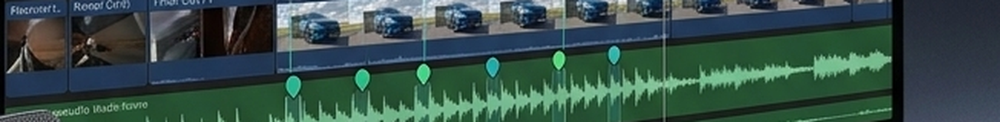

Skimming wyłączony automatycznie.
Skimming switches off automatically.
Final Cut domyślnie stawia marker tam, gdzie jest kursor — nie tam, gdzie jest playhead. BassMarker Pro wyłącza skimming na czas oznaczania, więc każdy marker trafia dokładnie na odtwarzaną pozycję, a nie pod myszką.
Final Cut places markers wherever your cursor is — not where the playhead is. BassMarker Pro disables skimming for the duration of marking, so every marker lands exactly on the playback position, not under the mouse.
Playhead startuje od zera, a aplikacja gra cały utwór w realnym czasie, naciskając M w wyliczonych momentach.
The playhead starts from zero, and the app plays the whole track in real time, pressing M at each calculated moment.

Suwak Advance — wyprzedź uderzenie.
The Advance slider — get ahead of the hit.
Czasem cięcie ma działać chwilę przed bitem, nie idealnie na nim. Suwak Advance przesuwa wszystkie markery o kilka klatek wcześniej — bez ponownej analizy audio.
Sometimes a cut should land just before the beat, not exactly on it. The Advance slider nudges every marker a few frames earlier — no audio re-analysis needed.
Do wyboru 24, 25, 30 lub 60 FPS, dopasowane do ustawień Twojego projektu.
Choose 24, 25, 30, or 60 FPS, matched to your project settings.

Zostań w swoim środowisku montażowym.
Stay inside your edit setup.
BassMarker Pro działa jako lekka aplikacja towarzysząca — otwarta razem z resztą Twojego stanowiska, gotowa w tle, gdy potrzebujesz oznaczyć kolejny utwór.
BassMarker Pro runs as a lightweight companion app — open alongside the rest of your setup, ready in the background whenever you need to mark the next track.